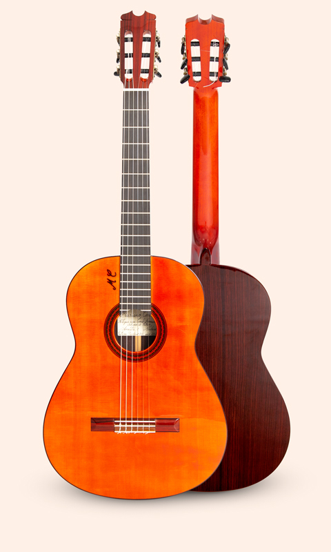
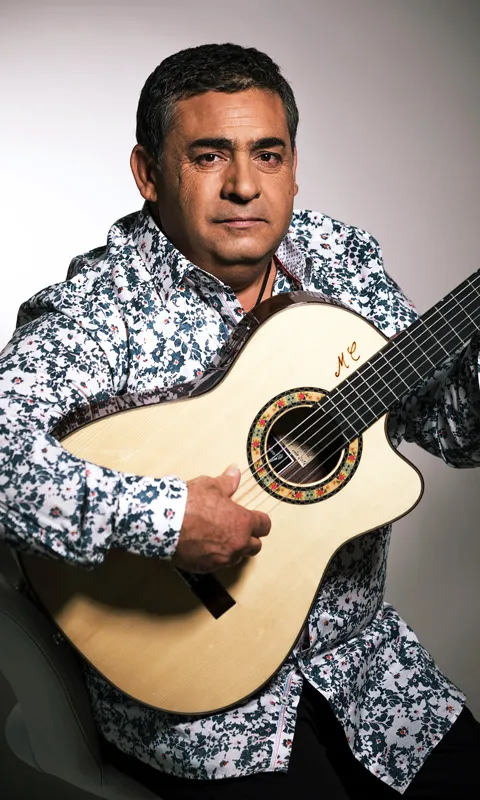
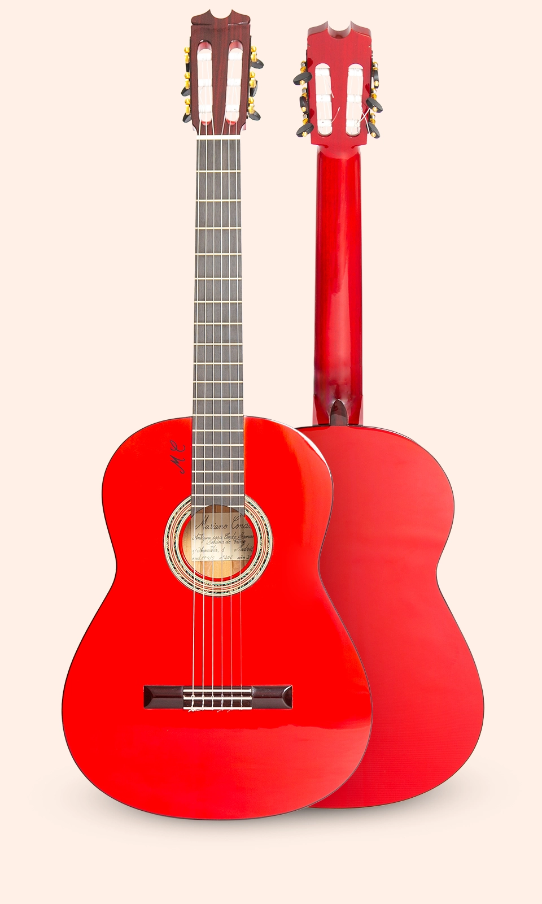
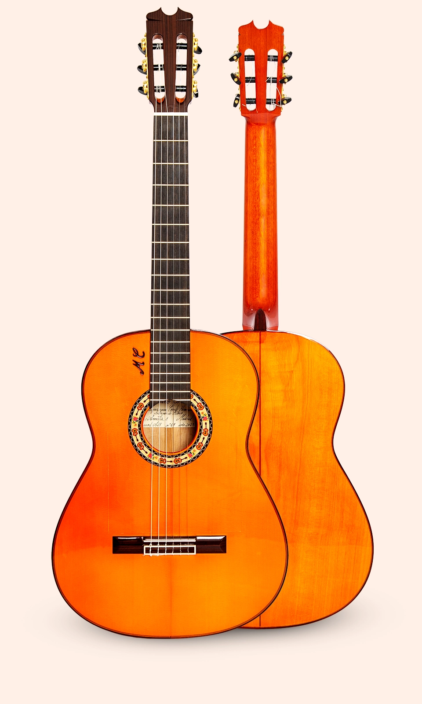
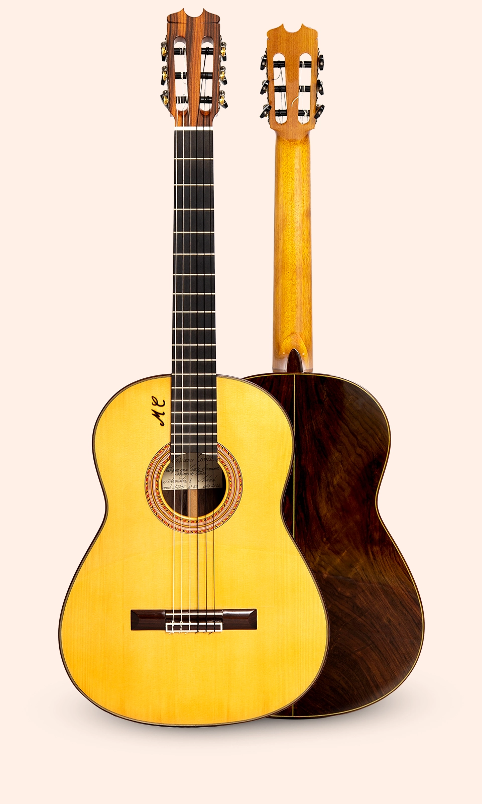
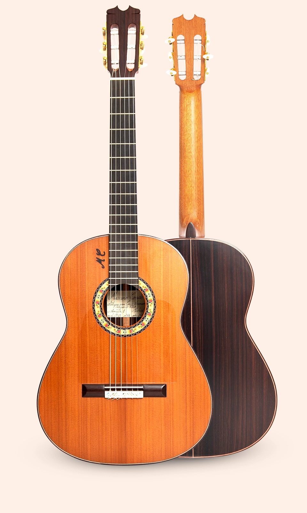

Inicio / Flamencas
El compás
de la guitarra flamenca.
Más de un siglo dedicados a la construcción de guitarras flamencas en el taller de la calle Amnistía, en pleno Madrid.
Flamencas
12 modelos,
una sola mano.
Construidas artesanalmente, numeradas consecutivamente, con cabeza de media luna e iniciales MC a fuego en la tapa.

Pozuelo Flamenco
Pieza de carácter propio, con ataque directo y una proyección pensada para el escenario.
Desde 4.840 €
Pozuelo Flamenco Caoba
La misma cabeza de media luna con aros y fondo de caoba: timbre cálido, respuesta redonda y gran comodidad de toque.
Desde 4.840 €
Pozuelo Flamenco Palo Santo
Variante en palo santo de India, de ataque seco y cuerpo profundo, pensada para el toque de concierto.
Desde 4.840 €
Pharaon
Respuesta inmediata y un sonido seco, la voz tradicional de la guitarra flamenca.
Desde 6.655 €
EF4/5
Equilibrio entre dinámica y cuerpo para el acompañamiento al cante y al baile.
Desde 6.655 €
EF5/N
Tacto ágil y gran riqueza armónica en una construcción totalmente artesanal.
Desde 6.655 €
A28
Ligereza y comodidad para largas sesiones de práctica sin perder identidad.
Desde 9.075 €
A26
Compás preciso, ataque limpio y la media luna reconocible de la casa Conde.
Desde 12.100 €
A27/N
Profundidad y sustain para quienes buscan una guitarra con alma flamenca.
Desde 9.075 €
AF25
Maderas seleccionadas y barniz tradicional para un sonido abierto y claro.
Desde 12.100 €
AF25/R
Una variante de la AF25 con un color más cálido y respuesta muy equilibrada.
Desde 13.100 €
Dedicación Flamenco
Instrumento de dedicatoria, construido sin prisas para un músico concreto.
Desde 24.200 €El oficio
Lo que hay
detrás.
Un legado que nos inspira
En Mariano Conde, llevamos más de un siglo dedicándonos con pasión y entrega a la construcción de guitarras flamencas, manteniendo vivo un legado que comenzó en 1915 y que hoy sigue latiendo en nuestro taller de la calle Amnistía, en pleno corazón de Madrid. Somos herederos de una tradición familiar que ha marcado la historia de la guitarra española y del flamenco.
Artesanía y materiales de primera
Seleccionamos personalmente maderas como el ciprés español, el palosanto de India, el arce, el sicomoro, la caoba y el palo santo de Brasil. Para la tapa armónica empleamos pino abeto alemán o cedro rojo, maderas que aportan brillo, proyección y una respuesta dinámica ideal para el toque flamenco. El mango, generalmente de cedro, y el diapasón de ébano aseguran comodidad y resistencia.
Nuestros modelos emblemáticos
Pozuelo Flamenco: un homenaje a nuestra tradición familiar, con tapa de abeto macizo y aros y fondo de arce, sicomoro, caoba o palo santo de India. A28: referente por su volumen, sustain y proyección, con ciprés español y tapa de abeto alemán o cedro rojo, y posibilidad de personalizar color y tiro de cuerdas.
Nuestro sonido y sensaciones
Vivo, brillante, con graves profundos y agudos cristalinos. La respuesta es inmediata y la pulsación media con acción baja facilita el rasgueo, el picado y el alzapúa. El peso equilibrado y la altura de cuerdas perfectamente medida permiten largas sesiones de toque sin fatiga.
Reconocimiento internacional
Artistas como Paco Cepero, Jesús Guerrero, Joni Jiménez, António Higuero, Ed Sheeran y Robe (Extremo Duro) han confiado en la calidad y el carácter único de nuestras guitarras flamencas.
Personalización y exclusividad
Cada guitarra puede personalizarse según las preferencias del guitarrista: maderas, color, tiro de cuerdas, clavijero mecánico o de palillos, roseta y acabado. Todas están numeradas y certificadas.